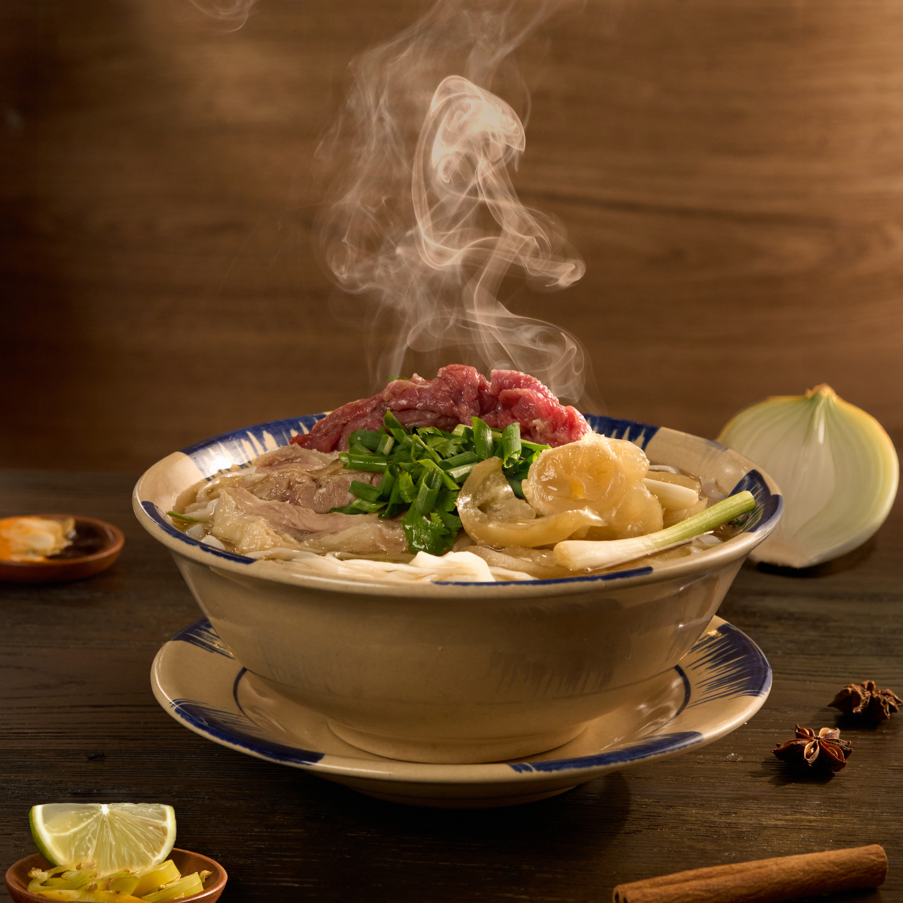

"Tinh hoa ẩm thực Việt trong từng làn khói nghi ngút"

Phở từ lâu đã trở thành biểu tượng văn hóa ẩm thực của người Việt Nam. Một tô phở đặc biệt chuẩn vị không chỉ nằm ở sợi bánh phở trắng mềm, dai nhẹ mà còn ở thứ nước dùng trong veo, ngọt thanh được ninh từ xương ống bò suốt nhiều giờ liền cùng các loại thảo mộc tự nhiên.
Phở ngon nhất là khi vừa bưng ra còn bốc khói nghi ngút. Trước khi thêm gia vị, hãy thử nếm một thìa nước dùng nguyên bản để cảm nhận vị ngọt tự nhiên từ xương, sau đó vắt nhẹ một miếng chanh tươi, thêm chút tương ớt và thưởng thức ngay khi còn nóng.